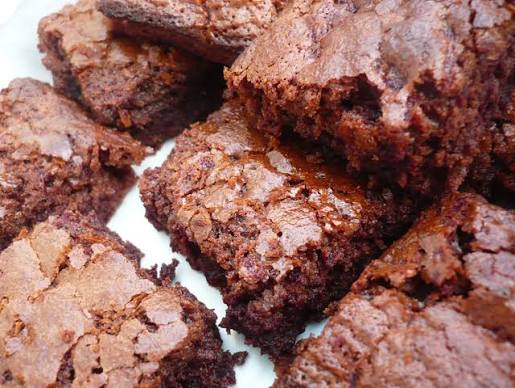

Brownies

Description
These brownies have never failed me. The recipe is simple enough that even my 8 year old can make them, but even the pickiest eater loves them. They have the perfect balance of chocolate and sweetness. Every bite is sure to deliver.
Ingredients:
- 1/2c butter, melted
- 1c white sugar
- 2 large eggs
- 1tsp vanilla extract
- 1/3c cocoa powder
- 1/2c flour
- 1/4tsp salt
- 1/4tsp baking powder
Steps:
- Preheat the oven to 350 degrees. Grease an 8x8 pan and dust with cocoa powder.
- Melt the butter, and stir in the sugar, eggs, and vanilla.
- Beat in the cocoa powder, flour, salt, and baking powder. Spread into prepared pan.
- Bake in the preheated oven until the top is dry and the edges have started to pull away from the sides. Approx. 25-30 minutes.
- Let cool before cutting into 16 pieces.
Home